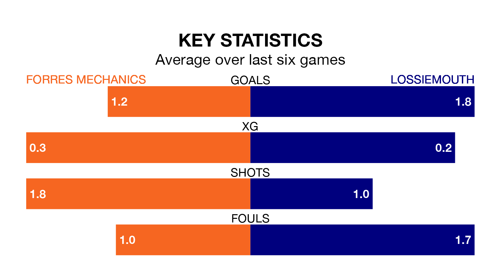

Lossiemouth travel to Mosset Park for Saturday's match against Forres Mechanics looking to bounce back from defeat last time out in Highland and Lowland Football Leagues.
Lossiemouth, who sit zero in the league after 14 games, fell to a 1-0 home defeat to Fraserburgh on December 9.
They face a Forres Mechanics side who picked up a win in their last match, a 2-0 victory against Strathspey Thistle, and who sit zero in the table.
With 17 goals in 14 games so far this season, Lossiemouth are the league's joint--12th-lowest scorers with 1.2 goals per game. But they are conceding fewer than average too, letting in 23 goals at a rate of 1.6 per game.
Forres Mechanics are also below average scorers, with 1.3 goals per game, compared to a league average of 1.7. They have conceded 1.5 goals per game.
The hosts are in bad form in Highland and Lowland Football Leagues, with one win and a draw from their last six games.
With four wins and two losses over that period, the away team's form is much better – they have taken 12 points from 18, compared to Forres Mechanics's four.
In the last five years, Forres Mechanics and Lossiemouth have played each other on four occasions. Forres Mechanics won three of them and they drew once.
On average, Forres Mechanics scored 2.2 goals and Lossiemouth 1.0 in those matches.
Their last meeting was on August 5, when Forres Mechanics won 3-0 away.
